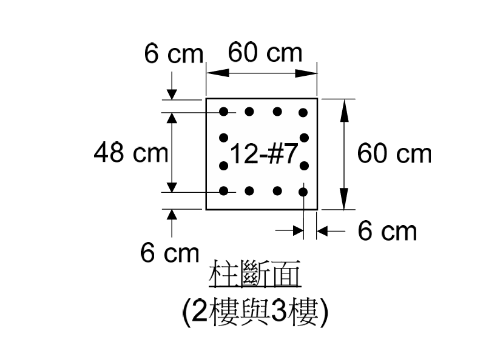
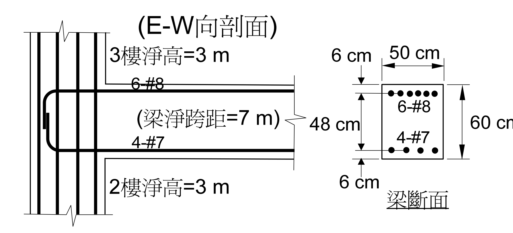
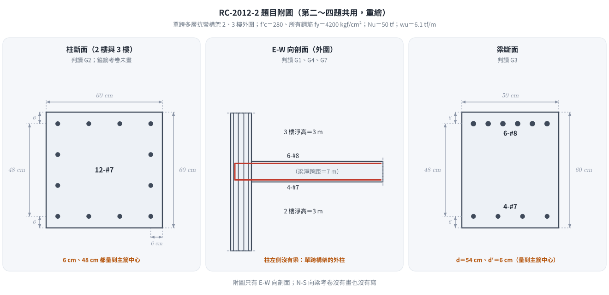
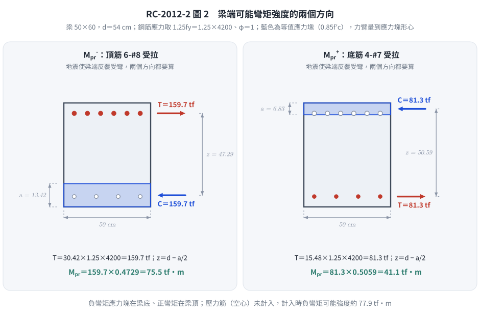

📄 題目正本：考卷原文・附圖・判讀清單（已確認）
RC-2012-2 題目正本
本檔只記錄考卷上寫了什麼、圖上畫了什麼，不含任何解法。解析見同資料夾
RC-2012-2.md。
判讀清單已經使用者確認（凍結）；本檔原則上不再修改（改動須回考卷原圖並記 log）。
| 項目 | 內容 |
|---|---|
| 考卷 | raw/exams/RC-2012_鋼筋混凝土設計與預力.pdf 第 1 頁（正面）第二題；背景敘述、公式與附圖在第 2 頁（背面） |
| 考年 | 民國 101 年（2012） |
| 配分 | 20 分 |
| 附圖 | RC-2012-2-fig-1.png（柱斷面）、RC-2012-2-fig-3.png（E-W 向剖面與梁斷面；2026-11-14 由考卷 500 dpi 重新擷取）；既有 RC-2012-2-fig-2.png 為同一剖面圖，梁中段壓有滑鼠游標，保留不刪 |
| 判讀狀態 | 已確認（2026-11-14 使用者確認；轉錄 2026-11-14；PyMuPDF 110 dpi 全頁目視＋抽出文字核對，附圖 400–500 dpi；盲讀後才比對既有解析） |
1. 考卷原文（逐字）
二、詳附圖構架，試計算梁構件所受地震引致之最大彎矩強度為何？（20 分）
2. 考卷給的公式、附表與參數
第一頁第一題後印「第二題至第四題請依試題背面敘述及附圖作答：」，背面敘述照錄：
所設計之某一單跨多層 RC 建築抗彎構架（moment-resisting frame），取其中 2 樓與 3 樓結構外圍之梁柱配置如下圖所示。所提供之設計參數與公式如下：
所有樓層柱淨高為 3 m，單跨之梁淨跨距為 7 m。
梁與柱混凝土 $f'_c$ = 280 kgf/cm²，所有號數鋼筋 $f_y$ = 4200 kgf/cm²。
柱設計極限軸力為 $N_u$ = 50 tf，梁設計垂直極限載重為 $w_u$ = 6.1 tf/m，設計時不考慮樓版貢獻。
梁箍筋使用 #3（面積為 0.71 cm²），柱箍筋使用 #4（面積為 1.27 cm²），梁與柱主筋使用 #7（面積為 3.87 cm²）與 #8（面積為 5.07 cm²）。部分相關規範公式與規定節錄如下：
柱閉合箍筋面積公式：$A_{sh1} = 0.3 \times s \times b_c \dfrac{f'_c}{f_{yt}}\left[\dfrac{A_g}{A_{ch}} - 1\right]$ 或 $A_{sh2} = 0.09 \times s \times b_c \times \dfrac{f'_c}{f_{yt}}$
柱橫向箍筋間距公式：$s_0 = 10 + \left(\dfrac{35 - h_x}{3}\right)$
混凝土抗剪強度（有軸壓力）：$V_c = 0.53\left(1 + \dfrac{N_u}{140A_g}\right)\sqrt{f'_c}\,b_w d$
梁柱接頭剪力強度規定：$5.3\sqrt{f'_c}A_j$（接頭四面接受圍束）或 $3.9\sqrt{f'_c}A_j$（三面或一雙對面受圍束）或 $3.2\sqrt{f'_c}A_j$（其他），$A_j$ 為接頭有效斷面積附圖：2 樓與 3 樓外圍結構 E-W（東西）向剖面之梁、柱與接頭配置情形
- 卷首注意事項：㈠可以使用電子計算器。㈡不必抄題，作答時請將試題題號及答案依照順序寫在試卷上，於本試題上作答者，不予計分。㈢答題所需公式或參數若未提供，請自行作合理假設。
3. 附圖

圖面文字照錄：6 cm、60 cm、48 cm、12-#7、60 cm、6 cm、6 cm、柱斷面 (2樓與3樓)。

圖面文字照錄：(E-W向剖面)、3樓淨高=3 m、6-#8、(梁淨跨距=7 m)、4-#7、2樓淨高=3 m、6 cm、50 cm、6-#8、48 cm、4-#7、60 cm、6 cm、梁斷面。
4. 判讀清單
「把握」標不確定者請優先確認；解讀類項目（題目用字的意思）另標「解讀」。第二～四題共用的判讀以 G 編號列出（三題相同）。
| # | 項目 | 判讀 | 圖上／題文依據 | 把握 |
|---|---|---|---|---|
| 1 | 所求 | 梁端受地震引致的最大彎矩強度（耐震設計的可能彎矩強度，正負兩向） | 題文 | 確定（解讀） |
| 2 | 沒有給 | 計算可能彎矩強度用的鋼筋應力倍數（$1.25f_y$）與 $\phi$ | 全卷公式節錄未列 | 確定 |
| G1 | 構架 | 單跨多層抗彎構架；圖示柱為外柱（E-W 向只有一側有梁） | 背面敘述「單跨」；立面柱左側無梁 | 確定 |
| G2 | 柱斷面 | $60 \times 60$ cm，12-#7（每邊 4 根）；鋼筋中心距柱面 6 cm，上下排中心距 48 cm | 柱斷面圖：6 cm 尺寸線端點落在柱面與鋼筋中心線；48 cm 量兩排鋼筋中心 | 確定 |
| G3 | 梁斷面 | $50 \times 60$ cm；頂 6-#8 一排、底 4-#7 一排；鋼筋中心距梁頂、梁底各 6 cm → $d = 54$ cm，$d' = 6$ cm | 梁斷面圖：6 cm 尺寸線端點落在梁面與鋼筋中心線；48 cm 量兩排鋼筋中心 | 確定 |
| G4 | 淨高與淨跨 | 2 樓、3 樓柱淨高皆 3 m；梁淨跨 7 m | 背面敘述；立面標註 | 確定 |
| G5 | 載重 | 柱 $N_u = 50$ tf；梁 $w_u = 6.1$ tf/m（設計值）；不考慮樓版 | 背面敘述 | 確定 |
| G6 | 材料 | $f'_c = 280$、所有鋼筋 $f_y = 4200$ kgf/cm²（含箍筋） | 背面敘述「所有號數鋼筋」 | 確定 |
| G7 | 梁筋錨定 | 梁上下筋伸入柱內以彎折相連（立面畫成 U 形） | 立面圖 | 確定（解讀） |
| G8 | 梁柱接頭強度式 | 考卷印 $5.3$／$3.9$／$3.2\sqrt{f'_c}A_j$，標題為「梁柱接頭剪力強度規定」，未寫「設計」或「標稱」，未給 $\phi$ | 背面公式節錄 | 確定 |
轉錄：2026-11-14（RC-U3-3 題目正本推廣・批 1）
確認：2026-11-14 使用者確認（RC-U3-3 題目正本推廣・批 1，關卡一）
考題編號：RC-2012-2
主分類： RC-U3-3 韌性要求與耐震設計
副分類： RC-U1-1 RC 梁彎矩強度分析與設計
設計法： USD 強度設計法
標籤： 耐震梁 特殊矩形框架梁 可能彎矩強度Mpr 地震彎矩 梁端強度 強柱弱梁 1.25fy
1. 題目（考卷原文見題目正本）
考卷原文、公式／附表、附圖與判讀清單（已確認）見
RC-2012-2-problem.md。本節只列解題時最容易讀錯的地方與本解使用的記號；題意以題目正本為準。

重繪自考卷附圖，依題目正本判讀清單 G1–G7。本圖攔下兩個讀錯：6 cm、48 cm 都量到主筋中心（不是淨保護層或核心）；圖示柱是單跨構架的外柱。
常見誤讀
| 項目 | 正確判讀 | 常見誤讀 |
|---|---|---|
| 6 cm | 由梁面／柱面量到主筋中心 → $d=54$ cm | 當成淨保護層 |
| 48 cm | 上下排主筋中心距 | 當成核心或淨尺寸 |
| 所求 | 梁端地震引致的最大彎矩強度（可能彎矩強度，正負兩向） | 求 $\phi M_n$ |
| 考卷沒有給 | $1.25f_y$、$\phi$ | — |
本解記號與設計參數：
- $f'_c = 280\ \text{kgf/cm}^2$，$f_y = 4{,}200\ \text{kgf/cm}^2$
- 梁主筋：#7（$A_b = 3.87\ \text{cm}^2$）、#8（$A_b = 5.07\ \text{cm}^2$）
- 梁斷面：$b_w = 50\ \text{cm}$，$h = 60\ \text{cm}$，$d = 60 - 6 = 54\ \text{cm}$
- 頂筋：$6\text{-\#8}$，$A_{s,\text{top}} = 6\times5.07 = 30.42\ \text{cm}^2$
- 底筋：$4\text{-\#7}$，$A_{s,\text{bot}} = 4\times3.87 = 15.48\ \text{cm}^2$
2. 考題核心精神與出題者意圖 (Core Concepts & Examiner's Intent)
核心精神：
特殊矩形框架（SMF）採強柱弱梁機制：地震時能量消散集中於梁端塑鉸。
梁端強度使用可能彎矩強度（Mpr），以 $f_{ps} = 1.25\,f_y$ 計算（考量鋼筋應變硬化），且 $\phi = 1.0$。
出題者意圖：
- 測試 Mpr 公式（$f_{ps} = 1.25\,f_y$，$\phi = 1.0$）與一般 $\phi M_n$（$f_y$，$\phi = 0.9$）的差異
- 測試地震正反兩向：頂筋決定負彎矩 Mpr（EQ→右），底筋決定正彎矩 Mpr（EQ→左）
- 梁最大彎矩 = 頂筋 Mpr（通常頂筋多於底筋）
3. 解題戰略地圖與陷阱分析 (Strategic Roadmap & Trap Analysis)
作戰計畫：
Step 1：確認 fps = 1.25fy（Mpr 用，非 fy）
Step 2：計算負彎矩 Mpr⁻（頂筋 6-#8 受拉）
Step 3：計算正彎矩 Mpr⁺（底筋 4-#7 受拉）
Step 4：報告最大值 = Mpr⁻（頂筋控制）
關鍵陷阱：
| # | 陷阱 | 應對策略 |
|---|---|---|
| 1 | 用 fy = 4200 計算 Mpr：應用 1.25fy | fps = 1.25 × 4200 = 5250 kgf/cm² |
| 2 | 忘記 φ = 1.0：Mpr 不折減 | Mpr = As × fps × (d − a/2)，無 φ 係數 |
| 3 | 只算一個方向：地震雙向 → 頂筋和底筋各管一個方向 | Mpr⁻（頂筋）和 Mpr⁺（底筋）均需計算 |
| 4 | d 混淆：d = h − 6 = 54 cm（6 cm 到筋心） | 對稱保護層，兩個方向 d 相同 = 54 cm |
3.5 變數層次分析 (Variable Hierarchy Analysis)
複習提示：第一次解題後，在每個卡住的知識點旁標記
⚠；第二次複習時只看有⚠的項目。
最終目標
計算梁端地震最大彎矩強度 = max(Mpr⁻, Mpr⁺)，其中 fps = 1.25fy，φ = 1.0
本題關鍵公式（依計算順序）
$$\text{Step 1:}\quad f_{ps} = 1.25\,f_y = 1.25\times4{,}200 = 5{,}250\ \text{kgf/cm}^2$$
$$\text{Step 2:}\quad a = \frac{A_s \cdot f_{ps}}{0.85\,f'_c\,b_w}$$
$$\text{Step 3:}\quad M_{pr} = A_s \cdot f_{ps} \cdot \left(d - \frac{\boxed{a}}{2}\right)$$
L1：題目直接給定
| 符號 | 數值 | 說明 |
|---|---|---|
| $b_w$ | 50 cm | 梁寬（圖示） |
| $h$ | 60 cm | 梁高 |
| $f'_c$ | 280 kgf/cm² | 混凝土強度 |
| $f_y$ | 4200 kgf/cm² | 鋼筋降伏強度 |
| 頂筋 | 6-#8，$A_{s,\text{top}}=30.42\ \text{cm}^2$ | 負彎矩拉力鋼筋 |
| 底筋 | 4-#7，$A_{s,\text{bot}}=15.48\ \text{cm}^2$ | 正彎矩拉力鋼筋 |
L2：需知識點推導
| 符號 | 公式／來源 | 卡關? |
|---|---|---|
| $d$ | $60-6=54\ \text{cm}$（6 cm 保護層至筋心） | |
| $f_{ps}$ | $1.25\times4{,}200=5{,}250\ \text{kgf/cm}^2$（Mpr 用，含硬化） | |
| $a_{\text{neg}}$ | $30.42\times5{,}250/(0.85\times280\times50)=13.42\ \text{cm}$ | |
| $M_{pr}^-$ | $30.42\times5{,}250\times(54-6.71)=75.5\ \text{tf·m}$ | |
| $a_{\text{pos}}$ | $15.48\times5{,}250/(0.85\times280\times50)=6.83\ \text{cm}$ | |
| $M_{pr}^+$ | $15.48\times5{,}250\times(54-3.42)=41.1\ \text{tf·m}$ |
L3：深層知識（不懂就卡住）
| 知識點 | 說明 | 卡關? |
|---|---|---|
| Mpr vs Mn vs φMn | Mpr：$1.25f_y$，$\phi=1.0$（塑鉸最大可能強度）；Mn：$f_y$，$\phi=1.0$；$\phi M_n$：$f_y$，$\phi=0.9$。Mpr > Mn > φMn | |
| 1.25fy 的由來 | 鋼筋降伏後有應變硬化（strain hardening），實際承載力高於降伏強度。ACI 318 用 1.25fy 估計塑鉸區的最壞情況，確保柱設計有足夠保守性 | |
| 地震雙向性 | EQ 向右：梁端負彎矩，頂筋受拉，Mpr⁻ 控制；EQ 向左：梁端正彎矩，底筋受拉，Mpr⁺ 控制。兩個值均為設計所需 |
4. 步驟化詳細計算過程 (Step-by-Step Detailed Calculation)
Step 1：可能鋼筋應力
$$f_{ps} = 1.25\,f_y = 1.25\times4{,}200 = \boxed{5{,}250\ \text{kgf/cm}^2}$$
Step 2：有效深度
頂筋與底筋均採 6 cm 保護層至筋心：
$$d = h - 6 = 60 - 6 = \boxed{54\ \text{cm}}$$
▌Mpr⁻（負彎矩，頂筋 6-#8 受拉）
EQ 向右時，梁柱接頭面受負彎矩（頂纖維拉力），頂筋 6-#8 為拉力鋼筋。
$$A_{s,\text{top}} = 6\times5.07 = 30.42\ \text{cm}^2$$
Whitney 壓力塊深度（壓縮區在梁底）：
$$a^- = \frac{A_{s,\text{top}}\times f_{ps}}{0.85\,f'_c\,b_w} = \frac{30.42\times5{,}250}{0.85\times280\times50} = \frac{159{,}705}{11{,}900} = \boxed{13.42\ \text{cm}}$$
可能負彎矩強度：
$$M_{pr}^- = A_{s,\text{top}}\times f_{ps}\times\left(d-\frac{a^-}{2}\right) = 30.42\times5{,}250\times\left(54-6.71\right)$$
$$= 159{,}705\times47.29 = 7{,}552{,}400\ \text{kgf·cm} = \boxed{75.5\ \text{tf·m}}$$
▌Mpr⁺（正彎矩，底筋 4-#7 受拉）
EQ 向左時，梁柱接頭面受正彎矩（底纖維拉力），底筋 4-#7 為拉力鋼筋。
$$A_{s,\text{bot}} = 4\times3.87 = 15.48\ \text{cm}^2$$
Whitney 壓力塊深度（壓縮區在梁頂）：
$$a^+ = \frac{A_{s,\text{bot}}\times f_{ps}}{0.85\,f'_c\,b_w} = \frac{15.48\times5{,}250}{0.85\times280\times50} = \frac{81{,}270}{11{,}900} = \boxed{6.83\ \text{cm}}$$
可能正彎矩強度：
$$M_{pr}^+ = A_{s,\text{bot}}\times f_{ps}\times\left(d-\frac{a^+}{2}\right) = 15.48\times5{,}250\times\left(54-3.42\right)$$
$$= 81{,}270\times50.58 = 4{,}110{,}607\ \text{kgf·cm} = \boxed{41.1\ \text{tf·m}}$$

圖 2 梁端可能彎矩強度的兩個方向。應力塊永遠在受壓側、鋼筋應力取 $1.25f_y$；本圖攔下「用 $f_y$ 算 $M_n$ 當 $M_{pr}$」與「正負向用錯鋼筋、應力塊畫在受拉側」。
結論彙整
| 彎矩方向 | 拉力鋼筋 | $a$ | $M_{pr}$ | 地震方向 |
|---|---|---|---|---|
| 負（頂筋受拉） | 6-#8，30.42 cm² | 13.42 cm | 75.5 tf·m | EQ→右 |
| 正（底筋受拉） | 4-#7，15.48 cm² | 6.83 cm | 41.1 tf·m | EQ→左 |
$$\boxed{\text{梁端地震最大彎矩強度} = M_{pr}^- = 75.5\ \text{tf·m}\ \text{（頂筋控制）}}$$
兩個 Mpr 值在後續柱剪力（第三題）與接頭剪力（第四題）設計中均需使用。
5. 關鍵爭議點與進階探討 (Critical Issues & Advanced Discussion)
① Mpr ≥ ½ Mpr 另端的耐震規定檢核
ACI 318 特殊框架梁規定：
$$M_{pr}^+ \geq \frac{1}{2}\,M_{pr}^- \implies 41.1 \geq \frac{1}{2}\times75.5 = 37.75\ \text{tf·m} \quad ✓$$
此規定確保梁在正反彎矩下均有足夠塑鉸能力，不致因底筋過少而在正彎矩時發生脆性破壞。
② 為何不直接用 φMn 作為「地震最大彎矩」
- $\phi M_n$ 是設計容量（考慮不確定性折減），代表梁「至少能承受」的彎矩
- $M_{pr}$ 是最大可能強度（應變硬化 + 不折減），代表梁「最多可能發展」的彎矩
- 設計柱和接頭時，必須用 Mpr（而非 φMn）來確保強柱弱梁機制確實成立
③ 梁端最大地震彎矩的物理意義
當梁形成塑鉸（beam hinging），梁端彎矩理論最大值為 Mpr。超過此值後梁進入全截面降伏，力量不再增加。故 Mpr = 75.5 tf·m 是此梁「地震荷重下最惡劣的梁端彎矩」，也是設計柱和接頭時的驅動力。
修正日期：2026-11-14（§1 改為指向題目正本；重繪題目附圖 figs/RC-2012-2-fig-1-problem.svg）
修正日期：2026-11-14（圖解補繪：圖 2 正負向 M_pr 斷面；向量圖，腳本 gen_RC-2012-2.py 可重跑）